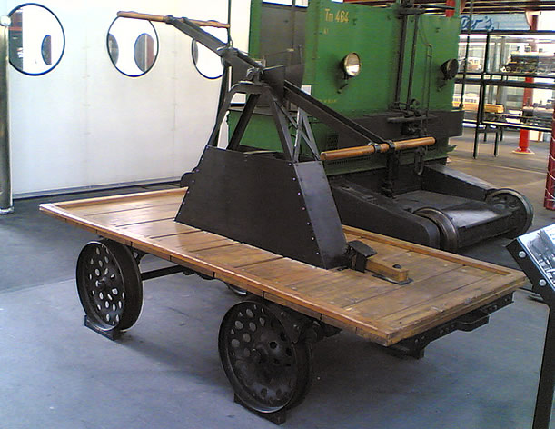

Un tren es una serie de vehículos que puede ser arrastrado por una locomotora o puede ser autopropulsado. Parte integrante de un ferrocarril son las vías sobre las que discurren los trenes.
De una forma u otra, las vías fueron muy anteriores al tren de vapor. Los primeros convoyes contaban con la fuerza humana para ser empujados a lo largo de las vías.
Desde que Thomas Newcomen, en 1712, y James Watt, en 1769, concibieron las primeras máquinas prácticas de vapor, los ingenieros trataron de aprovechar esta fuerza para propulsar un vehículo.
El primero de este tipo era difícil de conducir y suscitó tales proptestas en las calles de París que el proyecto tuvo que ser abandonado.
Las primeras locomotoras funcionales no surgieron hasta comienzos del siglo XIX, aunque padecían aún numerosos problemas técnicos. Las máquinas debían de tener potencia suficiente para arrastrar una pesada carga y hacer tan poco ruido y humo como fuese posible. Exigían también vías lisas que no se partieran bajo su peso y a las que pudieran aferrarse las ruedas.
Volver a InicioTodas las locomotoras de vapor se basan en los principios de las primeras.
El fuego de carbón en el hogar calienta el agua de la caldera, produciendo vapor. Este desplaza un pistón de un lado a otro. El pistón hace girar las ruedas a través de una biela y un cigüeñal. Maquinista y fogonero necesitan unas tres horas hasta conseguir vapor suficiente para que se mueva la locomotora.
El maquinista se encargaba del control de la locomotora, empleando el regulador, el inversor y el freno. Mantenía la velocidad del tren según las señales y las restricciones de la vía.
El fogonero atendía sobre todo a conservar un buen volumen de vapor, alimentando el fuego y un nivel adecuado de agua en la caldera, vigilando el manómetro. El fogonero ayudaba además al maquinista a observar las señales, sobre todo en las curvas.
Volver a InicioEl tendido de una línea supone más trabajo del que podría imaginarse. Como los trenes no pueden remontar cuestas muy pendientes, quizá la distancia más corta entre dos puntos no sea la más fácil.
A menudo han de seguir trazados más largos y menos abruptos. Para mantener las vías en el mismo nivel tanto como sea factible hay que hacer terraplenes, tajos, puentes y túneles. El ingeniero selecciona la ruta, decidiendo cuál puede ser la pendiente máxima. También hay que tomar en consideración el tipo de trenes que se utilizarán y el equilibrio entre carga y velocidad. Cabe evitar con "eses" o espirales las cuestas muy pronunciadas. Puentes y túneles son caros, pero permiten un trazado más corto y horizontal.
Para tender líneas públicas largas se necesitaron ejércitos de obreros, porque eran escasa la maquinaria disponible. Para cavar, tender vías y construir puentes empleaban herramientas manuales y la fuerza de sus músculos.
Volver a InicioLas vías han sido decisivas en la historia de los trenes. Los primeros carriles de hierro fundido se rompían fácilmente. Los carriles de hierro fundido fueron reemplazados por otros de hierro forjado y a partir de 1870 se utilizaron los de acero, que apenas se desgastaban. Las vías se mejoraban para adaptarse a trenes más veloces y pesados.
La mayoría de las líneas principales tienen ahora carriles soldados en vez de los segmentados que antaño producían el característico traqueteo. Los ingenieros experimentaron muchos tamaños y formas de carril hasta lograr el mejor modelo, el de "patín plano".
La distancia entre los carriles se denomina ancho de vía y varía en todo el mundo. El ancho estándar de vía en la mayoría de los países europeos y Estados Unidos es de 1.435 mm. Hay otras medidas mayores y menores que la estándar.
Volver a Inicio